★★★★★
A perfect place to learn wind sports. We came as a family, with people of all ages, and spent two days having fun, learning and wanting more... we'll definitely be back!
"
Todos Al Agua was born in 2016 as a family dream. Seba and the team started out teaching windsurf and kitesurf in Argentina — in Ullum and Cuesta del Viento — driven by a passion for wind sports and the desire to share that experience with as many people as possible.
Before opening the school, they spent a season in Maui, Hawaii — the birthplace of water and wind sports, where surfers and kitesurfers from all over the world gather. It was there that they refined their teaching methodology and understood what separates a good school from an unforgettable one: attention to detail, safety, and genuine care for each student.
In 2018 they arrived in Icaraizinho for the first time — and fell in love. The wind conditions, the beauty of the beaches, Lagoa dos Patos and the pace of life in the village were everything they were looking for. In 2019 they set up a permanent base in Icaraizinho, and they never stopped since.
One of the great advantages of Todos Al Agua is what happens before and after the lesson: the logistics. We've invested heavily in our own fleet of vehicles to make sure our students always get to the best spot, at the right time.
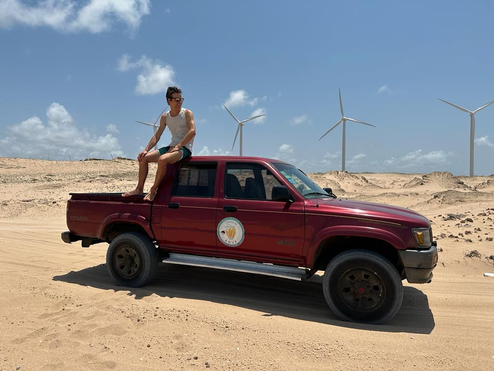
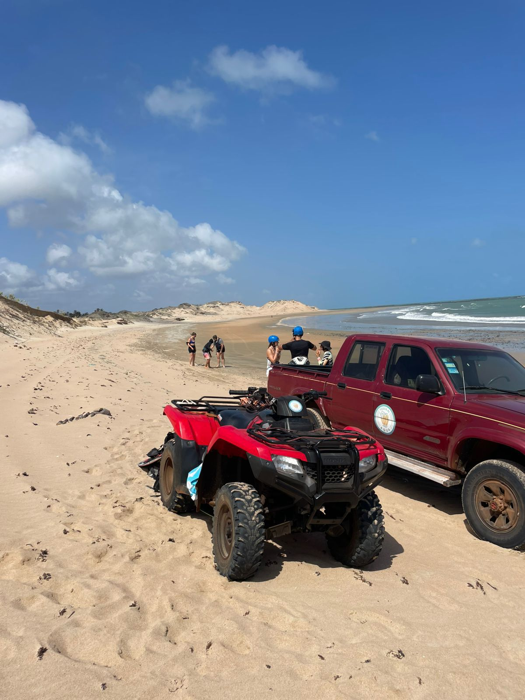
Our methodology starts with choosing the spot. Icaraizinho Bay is perfect for beginners at low to medium tide. Praia da Ponta, a 20-minute buggy ride along the beach, has ideal conditions for kitesurf. Lagoa dos Patos, 50 minutes away with a boat trip included, is a paradise for all disciplines. The Todos Al Agua team decides every day which is the right choice — and takes you there.
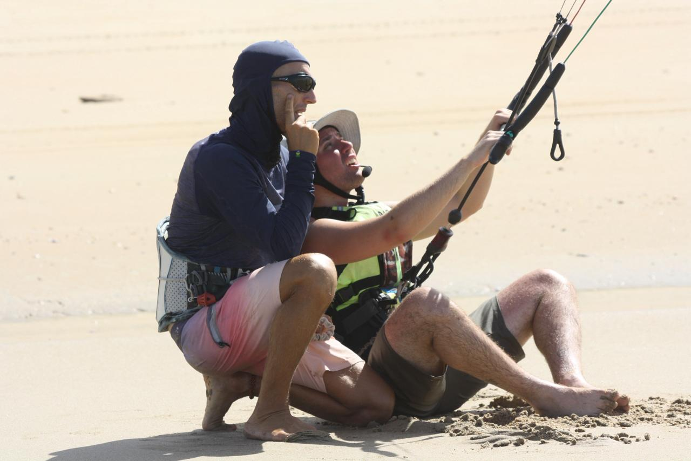

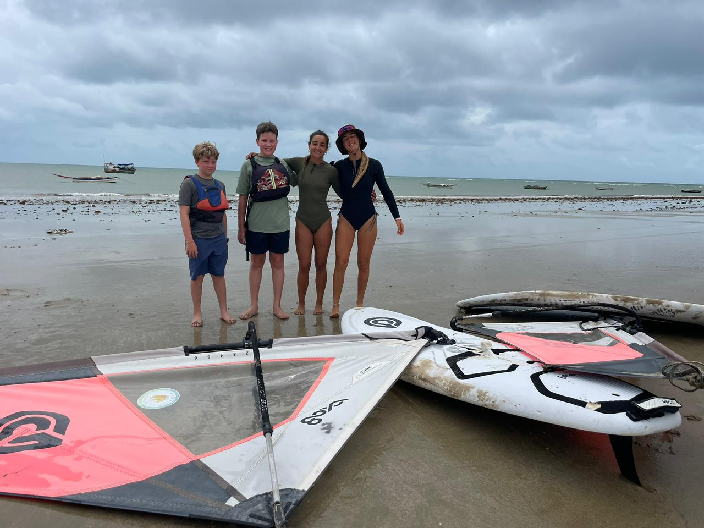
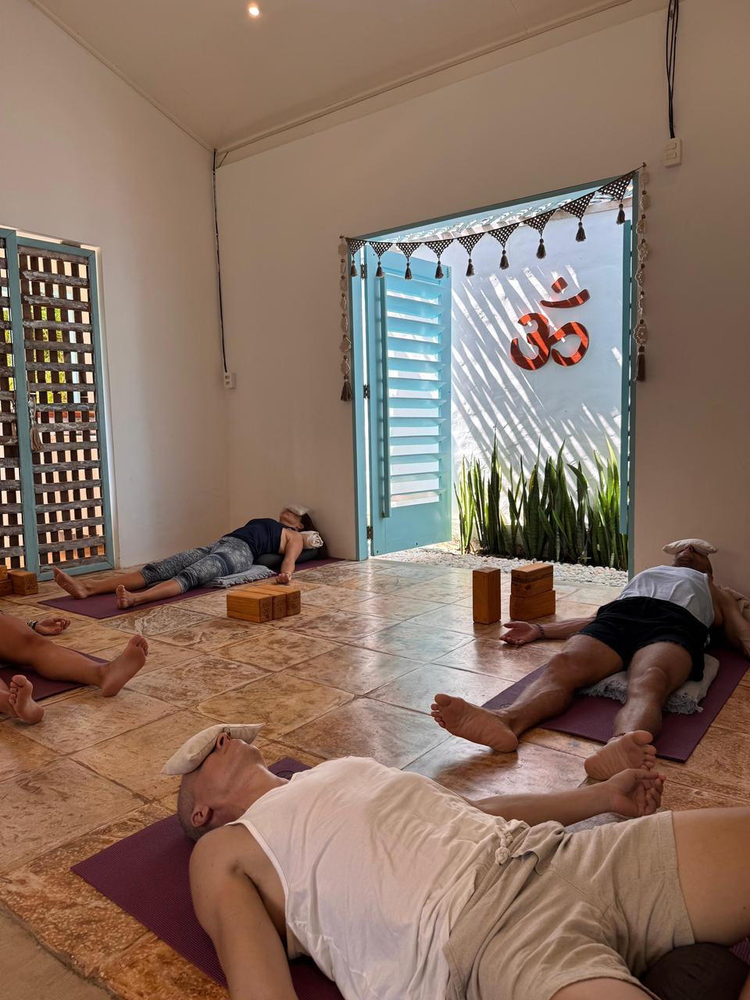


A family-run, passionate and multicultural team. We speak Portuguese, Spanish, English, French and German — so every student feels at home, no matter where they come from.
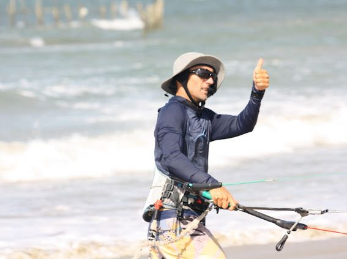
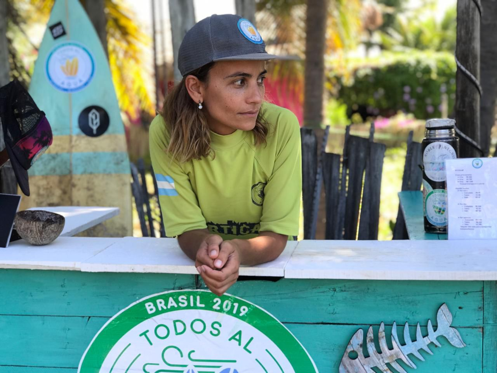
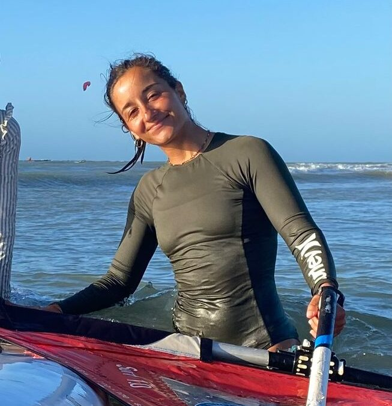
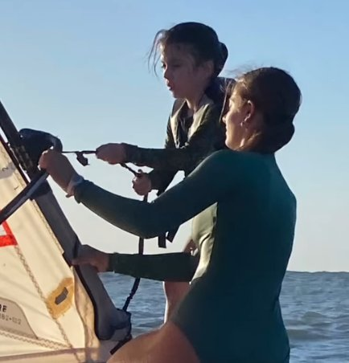
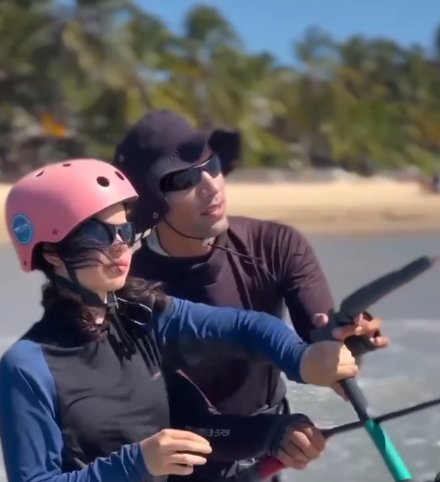

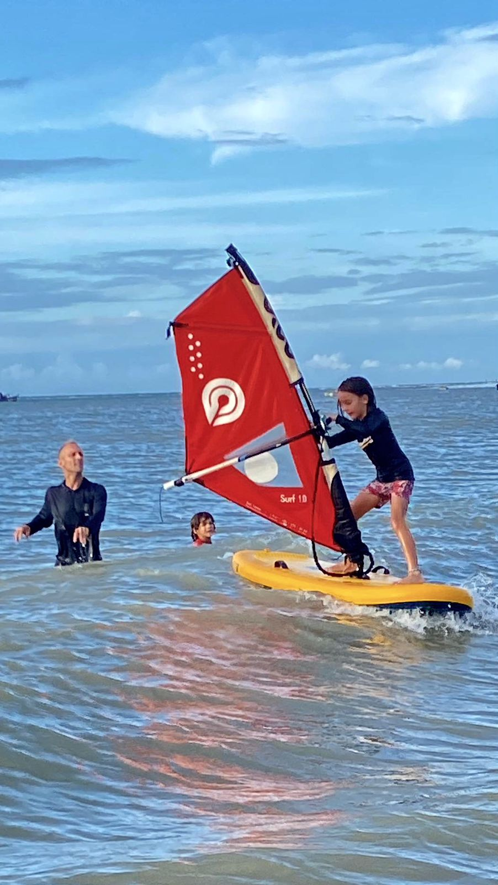
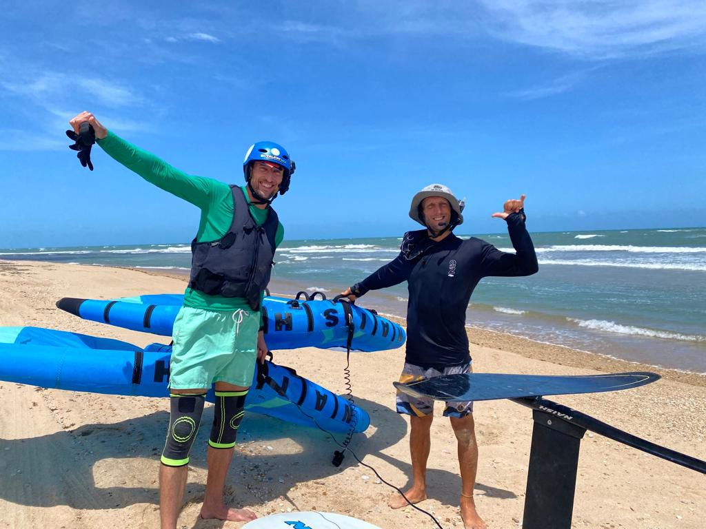
A perfect place to learn wind sports. We came as a family, with people of all ages, and spent two days having fun, learning and wanting more... we'll definitely be back!
An incredible experience! Fantastic place, wonderful beaches. A special thanks to Sebastian and Pupi! Sebastian is a great windsurf and wingfoil instructor! Highly recommend!
An amazing place! Learning to sail with Seba was a real pleasure! All aboard!!